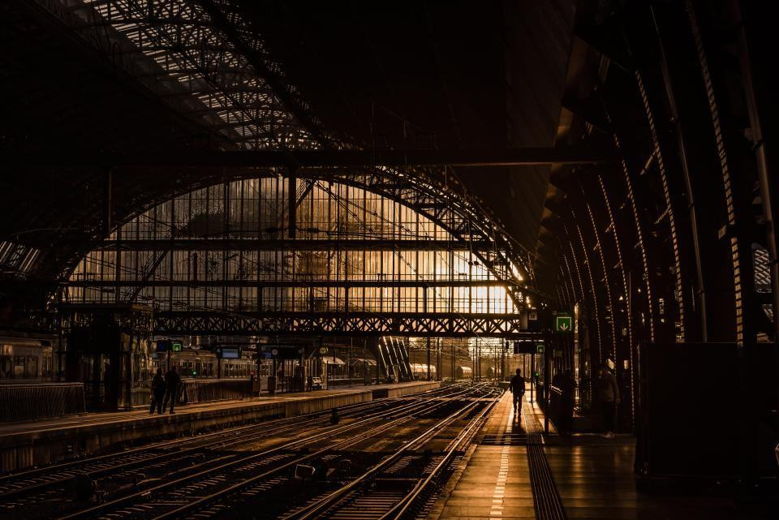

Två veckor till havs, två veckor hemma
Våra vindkraftstekniker arbetar i rotation från servicefartyg och hotellplattformar. Vi bekostar GWO-certifiering, offshoreläkarintyg och vidareutbildning till högspänningsbehörighet.
Hälften av våra medarbetare har jobbat här i mindre än fem år – här får du ansvar snabbt i ett bolag som fortfarande växer.
Så byggs en park till havs
- 1

Vind och havsbotten
Flytande lidarbojar mäter vinden i två år medan geofysiska fartyg kartlägger botten.
- 2

Miljöprövning
Fåglar, tumlare och fiske utreds i samråd med länsstyrelser, fiskare och forskare innan ansökan.
- 3

Installation till havs
Fundament, kablar och turbiner installeras under sommarhalvåret med upphandlade installationsfartyg.
- 4

25 år i drift
Egna tekniker och servicefartyg tar över parken från dag ett och följer varje turbin från kontrollrummet i Göteborg.
Vad söker du?
Senaste från havet

Första vätgasen i Stenungsund
Elektrolysören på 200 MW startade i september och levererar vätgas till kemiindustrin via en tre kilometer lång ledning.
Läs mer
Flytande park utanför Bergen
Elva turbiner på flytande betongfundament har förankrats på 240 meters djup.
Läs mer
Ny servicehamn i Grenå
Hamnen blir bas för 140 tekniker och fyra nya servicefartyg för parkerna i Kattegatt.
Läs mer
Vind, vätgas, nät och drift
 Utveckling och bygg
Utveckling och byggHavbrink Offshore Wind AB
Utvecklar och bygger havsvindparker i sju länder från kontoren i Göteborg och Esbjerg.
 Vätgas
VätgasHavbrink Hydrogen AB
Bygger och driver elektrolysanläggningar vid kusten och säljer vätgas på långa avtal.

Nät och kabelHavbrink Grid AS
Äger exportkablar och transformatorstationer till havs i Norge, Danmark och Sverige.
 Drift och service
Drift och serviceHavbrink Operations A/S
Servar egna och andras turbiner med tekniker och fartyg från Esbjerg till Rügen.
Finansiell information
Från Nordsjön till Östersjön
Kontoren ligger i hamnstäderna nära parkerna, där fartygen och teknikerna utgår.
- Göteborg – huvudkontorLindholmspiren 7. Koncernledning, kontrollrum och Havbrink Hydrogen.
- VarbergServicehamn för parkerna i södra Kattegatt.
- EsbjergHavbrink Operations A/S och projektkontor för Nordsjön.
- GrenåNy servicehamn för parkerna kring Anholt.
- BergenHavbrink Grid AS och Havbrink Floating.
- HamburgHavbrink Wind Deutschland, utveckling i tyska Nordsjön och Östersjön.
- GdańskHavbrink Polska och projektkontor för Ławica Wschodnia.
- AberdeenHavbrink Offshore UK, flytande vind i Skottland.
Senaste nyheterna och pressmeddelanden

Produktionen ökade med 21 procent efter att Utsira Flytande och Kattegatt Syd tagits i drift.

Första leveransen gick till kemiklustret den 12 september.

15-årigt avtal om 4 TWh per år från Kattegatt Nord.

Investeringen på 600 miljoner danska kronor skapar 140 jobb.
Ung koncern, gammalt hav
- 2004Västkustens Kraft och danska Brinkholm Energi går samman till Havbrink.
- 2007Kattegatt Syd, Sveriges första kommersiella havsvindpark, tas i drift.
- 2013Första parken i tyska Nordsjön.
- 2015Noteras på Nasdaq Stockholm.
- 2019Havbrink Grid bildas och tar över alla exportkablar.
- 2021Beslut om första vätgasanläggningen i Stenungsund.
- 2026Första flytande parken i drift utanför Bergen.